Bruce 2585 1myr Rotated Rupture Variability, Reverse
This exercise uses translations and rotations to estimate ground motion variability from different sources. We begin by selecting a subset of similar ruptures which match a set of criteria (in this case, Reverse, Dip=45). Each rupture is then reoriented such that its strike (following the Aki & Richards 1980 convention) is 0 degrees (due North, dipping to the right for normal or reverse ruptures). For each site, ruptures are translated such that their scalar seismic moment centroid is directly North of the site, and their 3-dimensional distance (Rrup) is as specified (we consider 10 distance[s] here).
We then perform various rotations. We rotate the rupture in place around its centroid, holding the site-to-source centroid path and Rrup constant (henceforth 'Rupture Strike'). We also rotate ruptures around the site, holding Rrup and source orientation relative to the site constant but sampling different various paths (henceforth 'Path'). We do this for each unique combination of Rupture Strike, Path, Distance, Site, and Rupture.
NOTE: This page uses the SCEC BBP to simulate a 1-dimensional velocity structure. Thus we expect no path variability, and plots of path variabilitiy are included only as verification of the method.
RSQSim Catalog Details
Table Of Contents
- Rupture Rotation Parameters
- Reverse RSQSim Rupture Match Criteria
- Sites
- Result Summary Table
- Source-strike Variability
- Within-event, single-site Variability
- Within-event, single-site Variability Methodology
- Within-event, single-site Variability Mag-Distance Plots
- 20.0 km M6.5 Within-event, single-site Results
- 60.0 km M6.5 Within-event, single-site Results
- 120.0 km M6.5 Within-event, single-site Results
- 20.0 km M7 Within-event, single-site Results
- 60.0 km M7 Within-event, single-site Results
- 120.0 km M7 Within-event, single-site Results
- 20.0 km M7.5 Within-event, single-site Results
- 60.0 km M7.5 Within-event, single-site Results
- 120.0 km M7.5 Within-event, single-site Results
- Between-events Variability
- Azumth Dependence
- BBP PartB Comparison
- CSV Files
Rupture Rotation Parameters
| Quantity | Variations | Description |
|---|
| Rupture | 100 | Unique (but similar in faulting style and magnitude) ruptures which match the given scenario. |
| Site | 1 | Unique site locations. If 3-d, each will have unique velocity profiles. |
| Rupture Strike | 36 | Rupture strike conforming to the Aki & Richards (1980) convention, where dipping faults dip to the right of the rupture. If path rotation is also performed, this azimuth is relative to the path. |
| Path | 1 | Path from the site to the centroid of the rupture, in azimuthal degrees (0 is North) |
| Distance | 20.0, 40.0, 60.0, 80.0, 100.0, 120.0, 140.0, 160.0, 180.0, 200.0 km | 3-dimensional distance between the site and the rupture surface. |
| Total # Simulations | 36000 | Total number of combinations of the above. |
Reverse RSQSim Rupture Match Criteria
(top)
We condisder 100 events in the catalog which match the following criteria:
- Ztor=[0.0,5.0]
- Rake=[75,105]
- Dip=[35.0,55.0]
Sites
| Name | Location | Vs30 (m/s) | Z1.0 (km) | Z2.5 (km) |
|---|
| USC | 34.0192, -118.286 | 863 | N/A | N/A |
Result Summary Table
Mag-Dist Plots
(top)
M6.5 Result Summary Table
(top)
| Type | Notation | Distance | 3s Std. Dev. | 5s Std. Dev. | 7.5s Std. Dev. | 10s Std. Dev. |
|---|
| Source-strike | φs | 20 km | 0.36 | 0.37 | 0.36 | 0.33 |
| Source-strike | φs | 40 km | 0.39 | 0.38 | 0.34 | 0.33 |
| Source-strike | φs | 60 km | 0.37 | 0.37 | 0.39 | 0.33 |
| Source-strike | φs | 80 km | 0.38 | 0.41 | 0.37 | 0.36 |
| Source-strike | φs | 100 km | 0.37 | 0.4 | 0.37 | 0.36 |
| Source-strike | φs | 120 km | 0.35 | 0.41 | 0.39 | 0.35 |
| Source-strike | φs | 140 km | 0.34 | 0.41 | 0.38 | 0.37 |
| Source-strike | φs | 160 km | 0.34 | 0.4 | 0.39 | 0.37 |
| Source-strike | φs | 180 km | 0.34 | 0.41 | 0.4 | 0.37 |
| Source-strike | φs | 200 km | 0.36 | 0.41 | 0.4 | 0.37 |
| Within-event, single-site | φSS | 20 km | 0.36 | 0.37 | 0.36 | 0.33 |
| Within-event, single-site | φSS | 40 km | 0.39 | 0.38 | 0.34 | 0.33 |
| Within-event, single-site | φSS | 60 km | 0.37 | 0.37 | 0.39 | 0.33 |
| Within-event, single-site | φSS | 80 km | 0.38 | 0.41 | 0.37 | 0.36 |
| Within-event, single-site | φSS | 100 km | 0.37 | 0.4 | 0.37 | 0.36 |
| Within-event, single-site | φSS | 120 km | 0.35 | 0.41 | 0.39 | 0.35 |
| Within-event, single-site | φSS | 140 km | 0.34 | 0.41 | 0.38 | 0.37 |
| Within-event, single-site | φSS | 160 km | 0.34 | 0.4 | 0.39 | 0.37 |
| Within-event, single-site | φSS | 180 km | 0.34 | 0.41 | 0.4 | 0.37 |
| Within-event, single-site | φSS | 200 km | 0.36 | 0.41 | 0.4 | 0.37 |
| Between-events | τ | 20 km | 0.31 | 0.3 | 0.3 | 0.27 |
| Between-events | τ | 40 km | 0.37 | 0.35 | 0.27 | 0.29 |
| Between-events | τ | 60 km | 0.4 | 0.3 | 0.32 | 0.26 |
| Between-events | τ | 80 km | 0.43 | 0.37 | 0.31 | 0.29 |
| Between-events | τ | 100 km | 0.36 | 0.34 | 0.28 | 0.32 |
| Between-events | τ | 120 km | 0.25 | 0.34 | 0.31 | 0.29 |
| Between-events | τ | 140 km | 0.21 | 0.32 | 0.3 | 0.28 |
| Between-events | τ | 160 km | 0.21 | 0.32 | 0.29 | 0.31 |
| Between-events | τ | 180 km | 0.24 | 0.33 | 0.32 | 0.32 |
| Between-events | τ | 200 km | 0.26 | 0.33 | 0.31 | 0.3 |
M6.5 Dist-Dependent Plot Table
(top)
| φs | 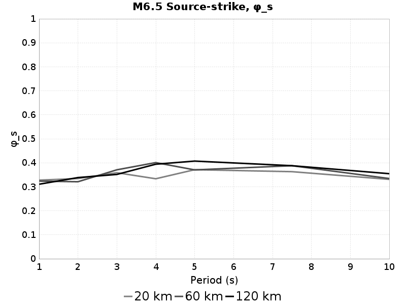 |
|---|
| φSS |  |
| τ |  |
M7 Result Summary Table
(top)
| Type | Notation | Distance | 3s Std. Dev. | 5s Std. Dev. | 7.5s Std. Dev. | 10s Std. Dev. |
|---|
| Source-strike | φs | 20 km | 0.38 | 0.36 | 0.38 | 0.36 |
| Source-strike | φs | 40 km | 0.38 | 0.38 | 0.36 | 0.38 |
| Source-strike | φs | 60 km | 0.37 | 0.36 | 0.41 | 0.38 |
| Source-strike | φs | 80 km | 0.37 | 0.39 | 0.39 | 0.41 |
| Source-strike | φs | 100 km | 0.35 | 0.38 | 0.39 | 0.42 |
| Source-strike | φs | 120 km | 0.33 | 0.38 | 0.42 | 0.4 |
| Source-strike | φs | 140 km | 0.32 | 0.38 | 0.4 | 0.41 |
| Source-strike | φs | 160 km | 0.33 | 0.37 | 0.41 | 0.43 |
| Source-strike | φs | 180 km | 0.33 | 0.38 | 0.42 | 0.42 |
| Source-strike | φs | 200 km | 0.34 | 0.38 | 0.42 | 0.42 |
| Within-event, single-site | φSS | 20 km | 0.38 | 0.36 | 0.38 | 0.36 |
| Within-event, single-site | φSS | 40 km | 0.38 | 0.38 | 0.36 | 0.38 |
| Within-event, single-site | φSS | 60 km | 0.37 | 0.36 | 0.41 | 0.38 |
| Within-event, single-site | φSS | 80 km | 0.37 | 0.39 | 0.39 | 0.41 |
| Within-event, single-site | φSS | 100 km | 0.35 | 0.38 | 0.39 | 0.42 |
| Within-event, single-site | φSS | 120 km | 0.33 | 0.38 | 0.42 | 0.4 |
| Within-event, single-site | φSS | 140 km | 0.32 | 0.38 | 0.4 | 0.41 |
| Within-event, single-site | φSS | 160 km | 0.33 | 0.37 | 0.41 | 0.43 |
| Within-event, single-site | φSS | 180 km | 0.33 | 0.38 | 0.42 | 0.42 |
| Within-event, single-site | φSS | 200 km | 0.34 | 0.38 | 0.42 | 0.42 |
| Between-events | τ | 20 km | 0.24 | 0.25 | 0.25 | 0.28 |
| Between-events | τ | 40 km | 0.27 | 0.31 | 0.23 | 0.29 |
| Between-events | τ | 60 km | 0.28 | 0.28 | 0.24 | 0.25 |
| Between-events | τ | 80 km | 0.28 | 0.31 | 0.26 | 0.27 |
| Between-events | τ | 100 km | 0.22 | 0.3 | 0.22 | 0.3 |
| Between-events | τ | 120 km | 0.16 | 0.28 | 0.24 | 0.28 |
| Between-events | τ | 140 km | 0.15 | 0.29 | 0.24 | 0.26 |
| Between-events | τ | 160 km | 0.15 | 0.28 | 0.23 | 0.29 |
| Between-events | τ | 180 km | 0.17 | 0.29 | 0.25 | 0.3 |
| Between-events | τ | 200 km | 0.19 | 0.3 | 0.25 | 0.28 |
M7 Dist-Dependent Plot Table
(top)
| φs |  |
|---|
| φSS |  |
| τ | 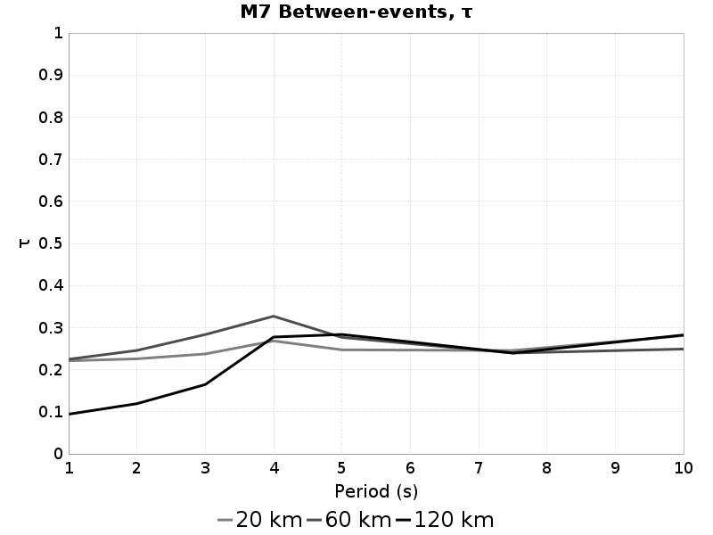 |
M7.5 Result Summary Table
(top)
| Type | Notation | Distance | 3s Std. Dev. | 5s Std. Dev. | 7.5s Std. Dev. | 10s Std. Dev. |
|---|
| Source-strike | φs | 20 km | 0.37 | 0.32 | 0.35 | 0.33 |
| Source-strike | φs | 40 km | 0.36 | 0.38 | 0.31 | 0.32 |
| Source-strike | φs | 60 km | 0.35 | 0.35 | 0.35 | 0.32 |
| Source-strike | φs | 80 km | 0.33 | 0.35 | 0.33 | 0.35 |
| Source-strike | φs | 100 km | 0.3 | 0.35 | 0.32 | 0.35 |
| Source-strike | φs | 120 km | 0.29 | 0.33 | 0.35 | 0.32 |
| Source-strike | φs | 140 km | 0.3 | 0.35 | 0.32 | 0.34 |
| Source-strike | φs | 160 km | 0.31 | 0.34 | 0.33 | 0.35 |
| Source-strike | φs | 180 km | 0.32 | 0.35 | 0.34 | 0.34 |
| Source-strike | φs | 200 km | 0.32 | 0.35 | 0.34 | 0.34 |
| Within-event, single-site | φSS | 20 km | 0.37 | 0.32 | 0.35 | 0.33 |
| Within-event, single-site | φSS | 40 km | 0.36 | 0.38 | 0.31 | 0.32 |
| Within-event, single-site | φSS | 60 km | 0.35 | 0.35 | 0.35 | 0.32 |
| Within-event, single-site | φSS | 80 km | 0.33 | 0.35 | 0.33 | 0.35 |
| Within-event, single-site | φSS | 100 km | 0.3 | 0.35 | 0.32 | 0.35 |
| Within-event, single-site | φSS | 120 km | 0.29 | 0.33 | 0.35 | 0.32 |
| Within-event, single-site | φSS | 140 km | 0.3 | 0.35 | 0.32 | 0.34 |
| Within-event, single-site | φSS | 160 km | 0.31 | 0.34 | 0.33 | 0.35 |
| Within-event, single-site | φSS | 180 km | 0.32 | 0.35 | 0.34 | 0.34 |
| Within-event, single-site | φSS | 200 km | 0.32 | 0.35 | 0.34 | 0.34 |
| Between-events | τ | 20 km | 0.12 | 0.12 | 0.18 | 0.22 |
| Between-events | τ | 40 km | 0.11 | 0.13 | 0.16 | 0.21 |
| Between-events | τ | 60 km | 0.12 | 0.12 | 0.19 | 0.2 |
| Between-events | τ | 80 km | 0.11 | 0.13 | 0.16 | 0.23 |
| Between-events | τ | 100 km | 0.09 | 0.13 | 0.17 | 0.22 |
| Between-events | τ | 120 km | 0.09 | 0.12 | 0.17 | 0.2 |
| Between-events | τ | 140 km | 0.11 | 0.12 | 0.15 | 0.21 |
| Between-events | τ | 160 km | 0.11 | 0.12 | 0.16 | 0.23 |
| Between-events | τ | 180 km | 0.11 | 0.12 | 0.17 | 0.22 |
| Between-events | τ | 200 km | 0.12 | 0.13 | 0.17 | 0.21 |
M7.5 Dist-Dependent Plot Table
(top)
| φs |  |
|---|
| φSS | 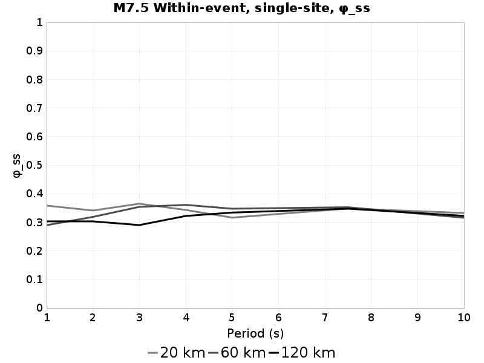 |
| τ |  |
Source-strike Variability
(top)
Source-strike Variability Methodology
(top)
Source-strike variability, denoted φs in Aki & Richards (1980), is computed separately for each:
- Site [1 unique]
- Distance [10 unique]
Then, for each unique combination of:
- Rupture [100 unique]
- Path [1 unique]
we compute residuals, δWes, of the natural-log ground motions (relative to the median), computed across all 36 combinations of:
- Rupture Strike [36 unique]
We take φs to be the standard deviation of all residuals, δWes, across each combination of Rupture, Path.
Here is an exmample with 5 rotations, which would be repeated for each combination of [Rupture, Path]. The site is shown with a blue square, and initially oriented rupture in bold with its hypocenter as a red star and centroid a green circle. Rotations of that rupture are in gray:

Source-strike Variability Mag-Distance Plots
(top)
| Plot Type | 3s | 5s | 7.5s | 10s |
|---|
| Simulated | |  | | |
| GMPE | 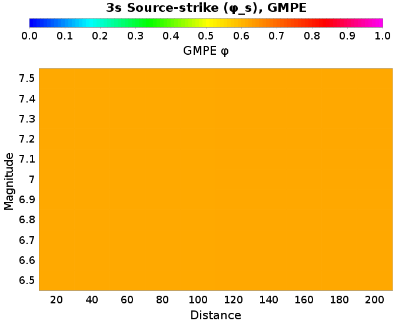 | 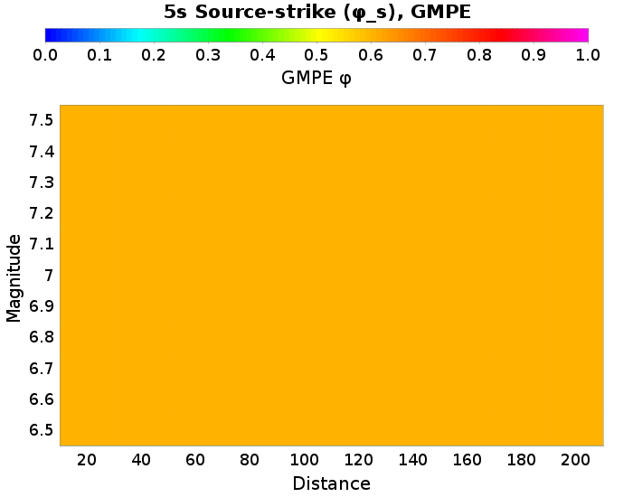 |  | 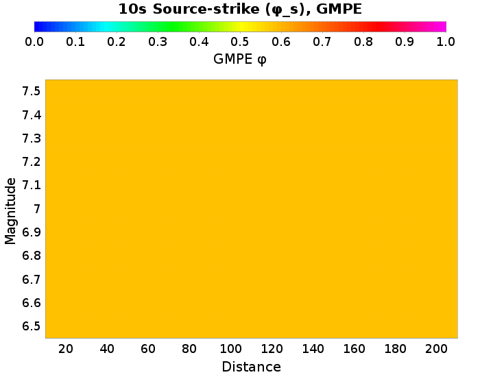 |
| Simulated - GMPE | 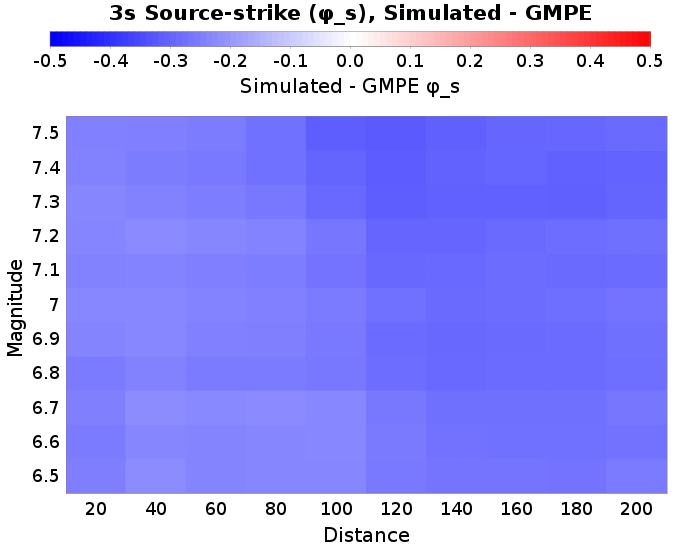 |  |  |  |
| Sim Median SA |  | 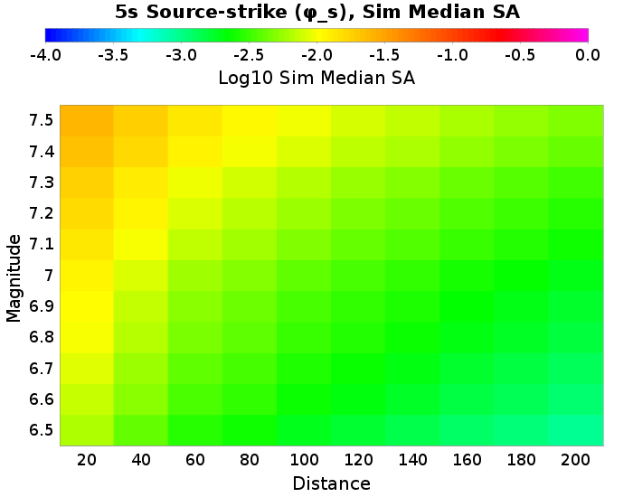 | 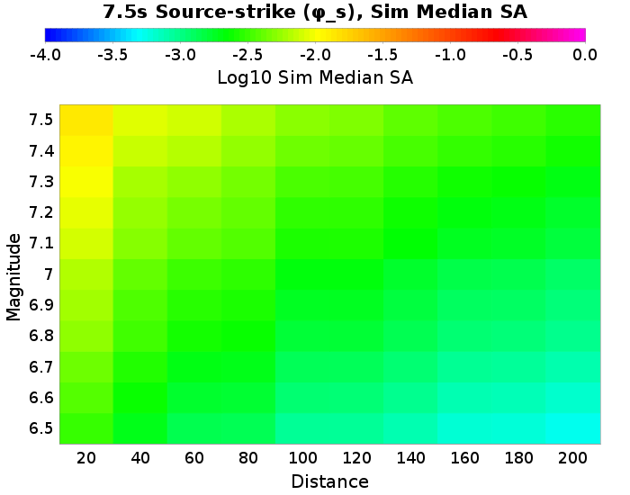 |  |
20.0 km M6.5 Source-strike Results
(top)

| 3s φs | Total | Mean | Median | Range | 5s φs | Total | Mean | Median | Range | 7.5s φs | Total | Mean | Median | Range | 10s φs | Total | Mean | Median | Range |
|---|
| 0.36 | 0.35 | 0.33 | [0.21 0.62] | | 0.37 | 0.35 | 0.34 | [0.16 0.64] | | 0.36 | 0.34 | 0.33 | [0.18 0.56] | | 0.33 | 0.32 | 0.31 | [0.18 0.5] |
60.0 km M6.5 Source-strike Results
(top)
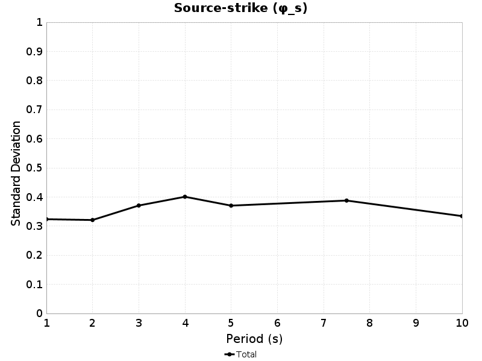
| 3s φs | Total | Mean | Median | Range | 5s φs | Total | Mean | Median | Range | 7.5s φs | Total | Mean | Median | Range | 10s φs | Total | Mean | Median | Range |
|---|
| 0.37 | 0.36 | 0.35 | [0.21 0.64] | | 0.37 | 0.35 | 0.34 | [0.18 0.63] | | 0.39 | 0.37 | 0.36 | [0.19 0.63] | | 0.33 | 0.33 | 0.32 | [0.2 0.53] |
| 3s | 5s |
|---|
 | 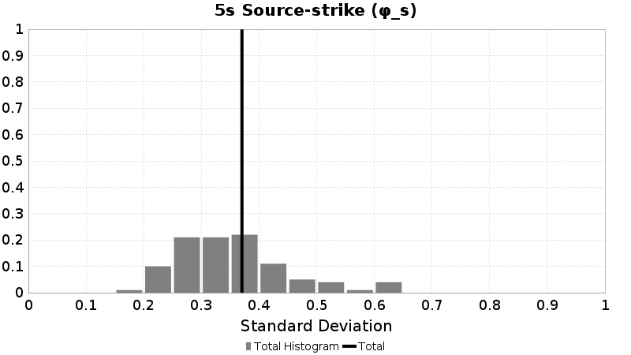 |
| 7.5s | 10s |
| 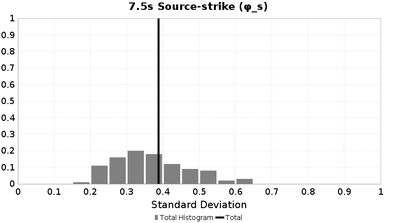 | |
120.0 km M6.5 Source-strike Results
(top)

| 3s φs | Total | Mean | Median | Range | 5s φs | Total | Mean | Median | Range | 7.5s φs | Total | Mean | Median | Range | 10s φs | Total | Mean | Median | Range |
|---|
| 0.35 | 0.34 | 0.34 | [0.17 0.65] | | 0.41 | 0.39 | 0.38 | [0.16 0.73] | | 0.39 | 0.37 | 0.35 | [0.21 0.62] | | 0.35 | 0.35 | 0.33 | [0.2 0.64] |
| 3s | 5s |
|---|
 |  |
| 7.5s | 10s |
| 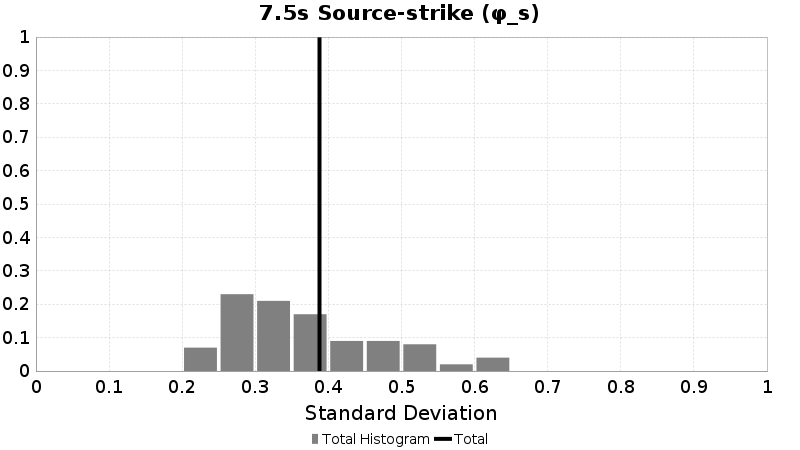 | 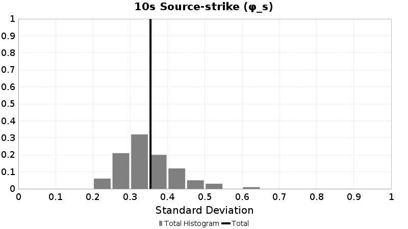 |
20.0 km M7 Source-strike Results
(top)

| 3s φs | Total | Mean | Median | Range | 5s φs | Total | Mean | Median | Range | 7.5s φs | Total | Mean | Median | Range | 10s φs | Total | Mean | Median | Range |
|---|
| 0.38 | 0.37 | 0.36 | [0.21 0.58] | | 0.36 | 0.35 | 0.34 | [0.17 0.53] | | 0.38 | 0.37 | 0.36 | [0.18 0.63] | | 0.36 | 0.34 | 0.32 | [0.16 0.72] |
60.0 km M7 Source-strike Results
(top)

| 3s φs | Total | Mean | Median | Range | 5s φs | Total | Mean | Median | Range | 7.5s φs | Total | Mean | Median | Range | 10s φs | Total | Mean | Median | Range |
|---|
| 0.37 | 0.36 | 0.36 | [0.23 0.6] | | 0.36 | 0.35 | 0.35 | [0.18 0.55] | | 0.41 | 0.4 | 0.4 | [0.21 0.64] | | 0.38 | 0.37 | 0.36 | [0.22 0.61] |
| 3s | 5s |
|---|
| 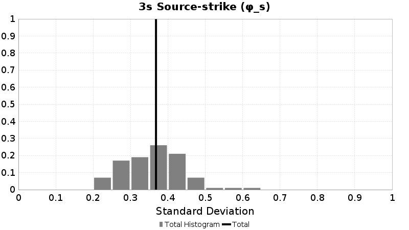 | 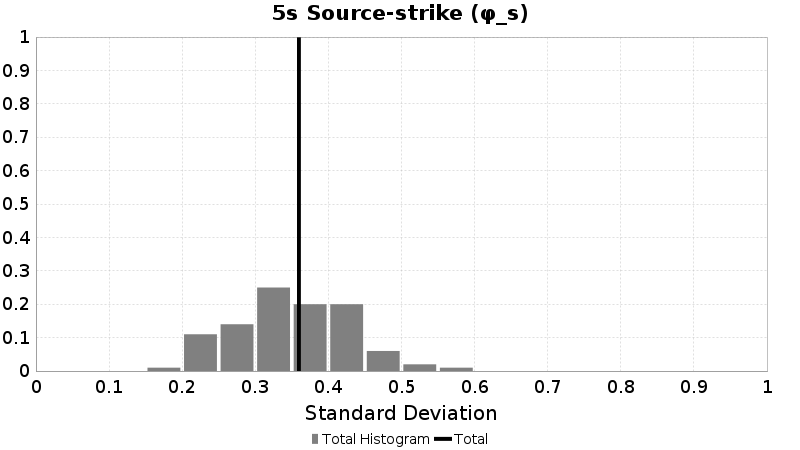 |
| 7.5s | 10s |
 |  |
120.0 km M7 Source-strike Results
(top)
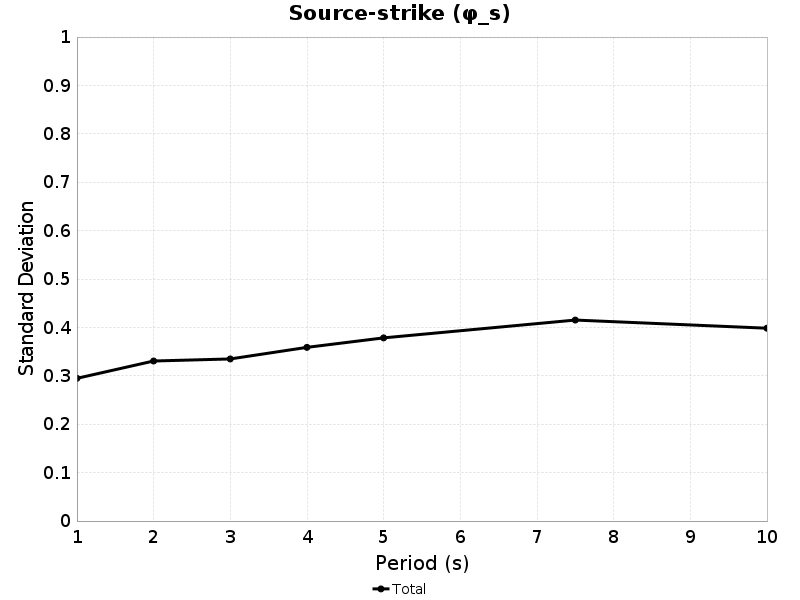
| 3s φs | Total | Mean | Median | Range | 5s φs | Total | Mean | Median | Range | 7.5s φs | Total | Mean | Median | Range | 10s φs | Total | Mean | Median | Range |
|---|
| 0.33 | 0.33 | 0.32 | [0.19 0.5] | | 0.38 | 0.37 | 0.36 | [0.16 0.55] | | 0.42 | 0.4 | 0.4 | [0.2 0.66] | | 0.4 | 0.39 | 0.37 | [0.21 0.67] |
20.0 km M7.5 Source-strike Results
(top)
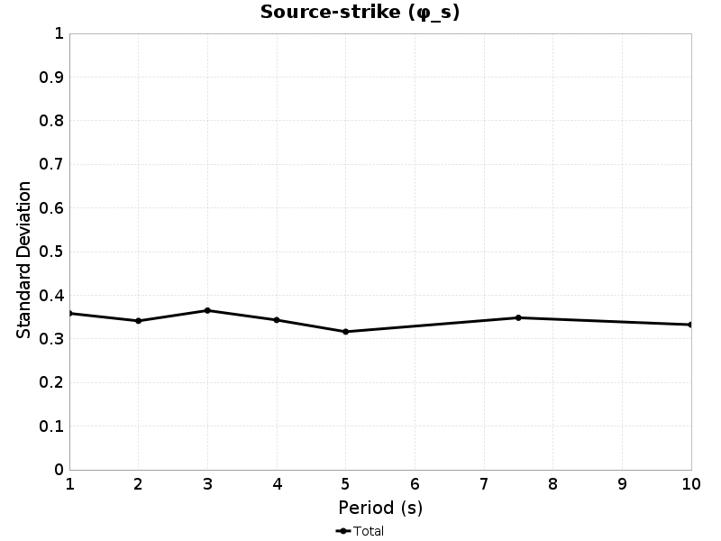
| 3s φs | Total | Mean | Median | Range | 5s φs | Total | Mean | Median | Range | 7.5s φs | Total | Mean | Median | Range | 10s φs | Total | Mean | Median | Range |
|---|
| 0.37 | 0.36 | 0.36 | [0.24 0.48] | | 0.32 | 0.31 | 0.3 | [0.19 0.48] | | 0.35 | 0.34 | 0.32 | [0.19 0.62] | | 0.33 | 0.32 | 0.32 | [0.15 0.5] |
60.0 km M7.5 Source-strike Results
(top)
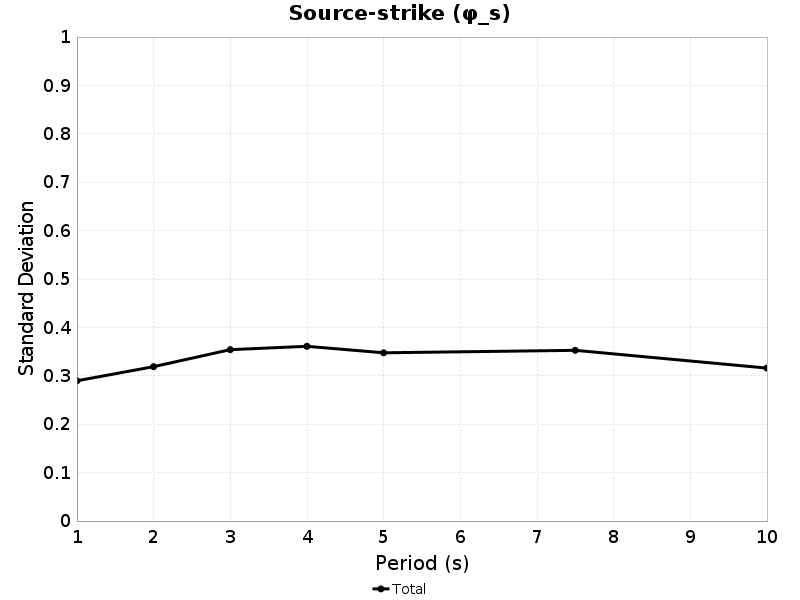
| 3s φs | Total | Mean | Median | Range | 5s φs | Total | Mean | Median | Range | 7.5s φs | Total | Mean | Median | Range | 10s φs | Total | Mean | Median | Range |
|---|
| 0.35 | 0.35 | 0.35 | [0.23 0.48] | | 0.35 | 0.34 | 0.34 | [0.2 0.54] | | 0.35 | 0.34 | 0.34 | [0.13 0.56] | | 0.32 | 0.31 | 0.3 | [0.16 0.47] |
120.0 km M7.5 Source-strike Results
(top)

| 3s φs | Total | Mean | Median | Range | 5s φs | Total | Mean | Median | Range | 7.5s φs | Total | Mean | Median | Range | 10s φs | Total | Mean | Median | Range |
|---|
| 0.29 | 0.29 | 0.28 | [0.17 0.41] | | 0.33 | 0.33 | 0.32 | [0.18 0.51] | | 0.35 | 0.34 | 0.33 | [0.16 0.55] | | 0.32 | 0.32 | 0.31 | [0.17 0.49] |
| 3s | 5s |
|---|
 | |
| 7.5s | 10s |
 | 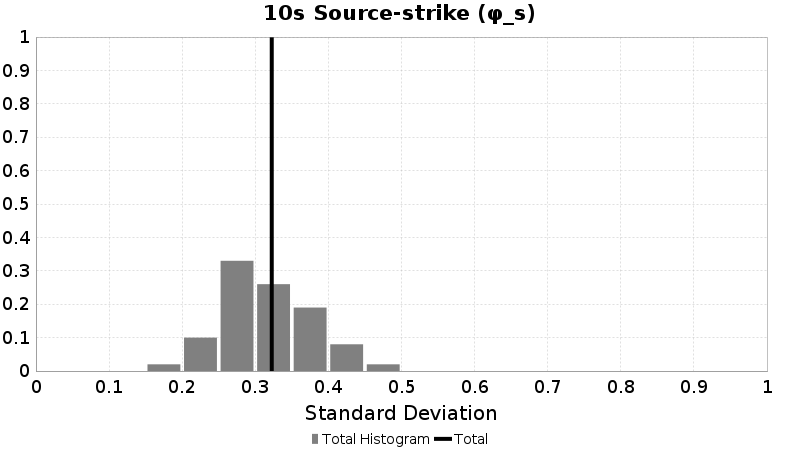 |
Within-event, single-site Variability
(top)
Within-event, single-site Variability Methodology
(top)
Within-event, single-site variability, denoted φSS in Al Atik (2010), is computed separately for each:
- Site [1 unique]
- Distance [10 unique]
Then, for each unique combination of:
we compute residuals, δWes, of the natural-log ground motions (relative to the median), computed across all 36 combinations of:
- Rupture Strike [36 unique]
- Path [1 unique]
We take φSS to be the standard deviation of all residuals, δWes, across each combination of Rupture.
Here is an exmample with 5 rotations, which would be repeated for each combination of [Rupture]. The site is shown with a blue square, and initially oriented rupture in bold with its hypocenter as a red star and centroid a green circle. Rotations of that rupture are in gray:

Within-event, single-site Variability Mag-Distance Plots
(top)
| Plot Type | 3s | 5s | 7.5s | 10s |
|---|
| Simulated |  |  |  |  |
| GMPE |  | 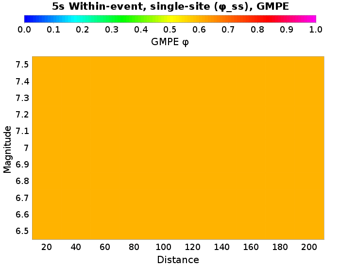 |  | 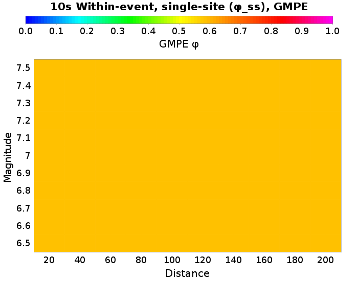 |
| Simulated - GMPE | 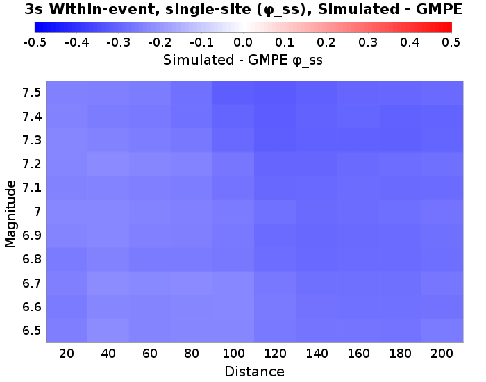 | 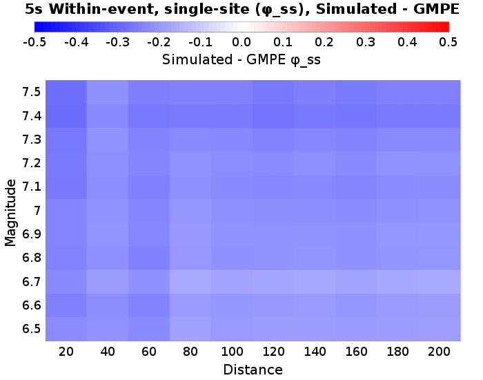 | 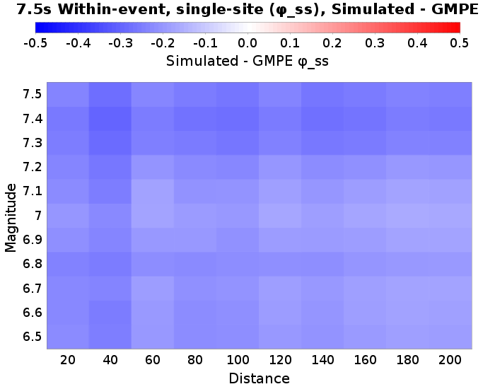 |  |
| Sim Median SA |  |  | 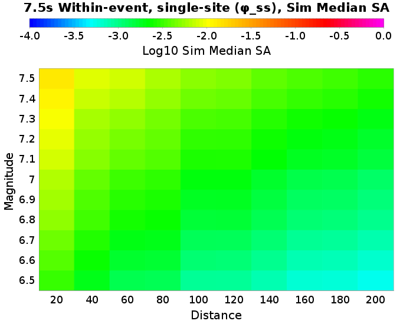 | 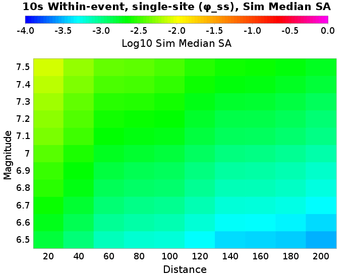 |
20.0 km M6.5 Within-event, single-site Results
(top)

| 3s φSS | Total | Mean | Median | Range | 5s φSS | Total | Mean | Median | Range | 7.5s φSS | Total | Mean | Median | Range | 10s φSS | Total | Mean | Median | Range |
|---|
| 0.36 | 0.35 | 0.33 | [0.21 0.62] | | 0.37 | 0.35 | 0.34 | [0.16 0.64] | | 0.36 | 0.34 | 0.33 | [0.18 0.56] | | 0.33 | 0.32 | 0.31 | [0.18 0.5] |
| 3s | 5s | 7.5s | 10s |
|---|
 |  | 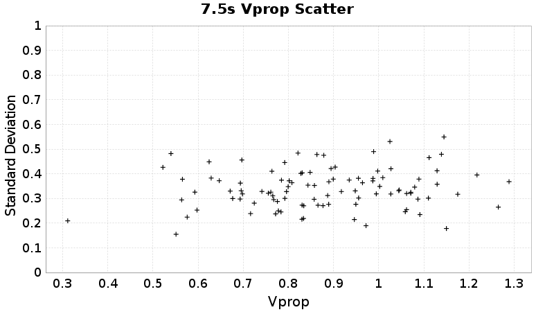 |  |
| 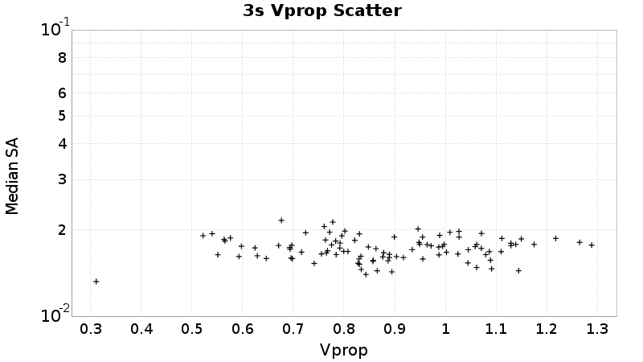 |  |  | 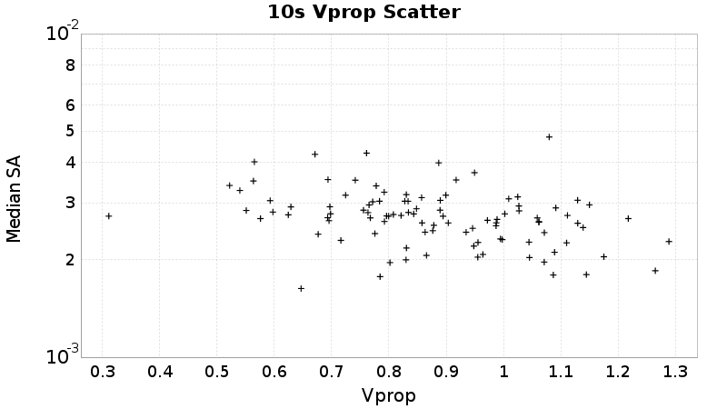 |
60.0 km M6.5 Within-event, single-site Results
(top)

| 3s φSS | Total | Mean | Median | Range | 5s φSS | Total | Mean | Median | Range | 7.5s φSS | Total | Mean | Median | Range | 10s φSS | Total | Mean | Median | Range |
|---|
| 0.37 | 0.36 | 0.35 | [0.21 0.64] | | 0.37 | 0.35 | 0.34 | [0.18 0.63] | | 0.39 | 0.37 | 0.36 | [0.19 0.63] | | 0.33 | 0.33 | 0.32 | [0.2 0.53] |
120.0 km M6.5 Within-event, single-site Results
(top)

| 3s φSS | Total | Mean | Median | Range | 5s φSS | Total | Mean | Median | Range | 7.5s φSS | Total | Mean | Median | Range | 10s φSS | Total | Mean | Median | Range |
|---|
| 0.35 | 0.34 | 0.34 | [0.17 0.65] | | 0.41 | 0.39 | 0.38 | [0.16 0.73] | | 0.39 | 0.37 | 0.35 | [0.21 0.62] | | 0.35 | 0.35 | 0.33 | [0.2 0.64] |
| 3s | 5s |
|---|
 |  |
| 7.5s | 10s |
| 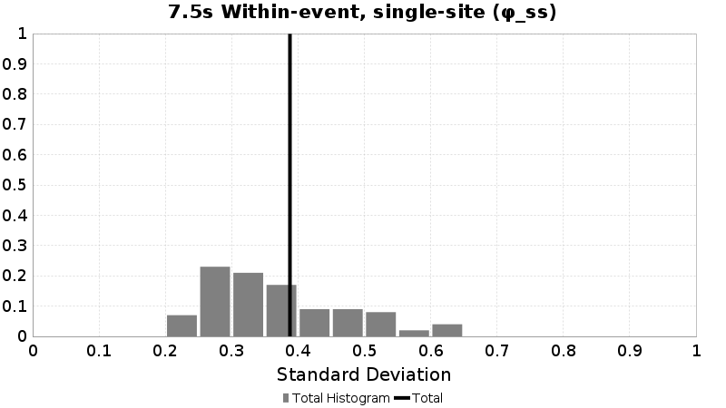 | 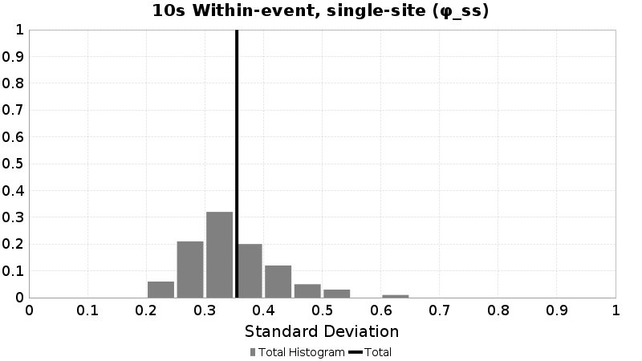 |
20.0 km M7 Within-event, single-site Results
(top)

| 3s φSS | Total | Mean | Median | Range | 5s φSS | Total | Mean | Median | Range | 7.5s φSS | Total | Mean | Median | Range | 10s φSS | Total | Mean | Median | Range |
|---|
| 0.38 | 0.37 | 0.36 | [0.21 0.58] | | 0.36 | 0.35 | 0.34 | [0.17 0.53] | | 0.38 | 0.37 | 0.36 | [0.18 0.63] | | 0.36 | 0.34 | 0.32 | [0.16 0.72] |
| 3s | 5s |
|---|
 | 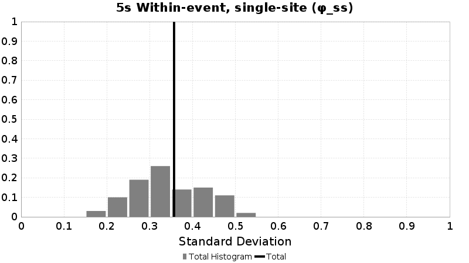 |
| 7.5s | 10s |
 | 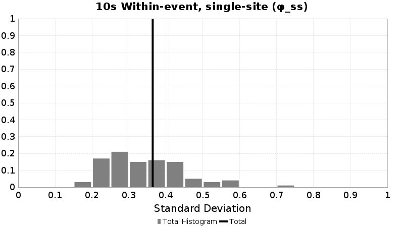 |
60.0 km M7 Within-event, single-site Results
(top)
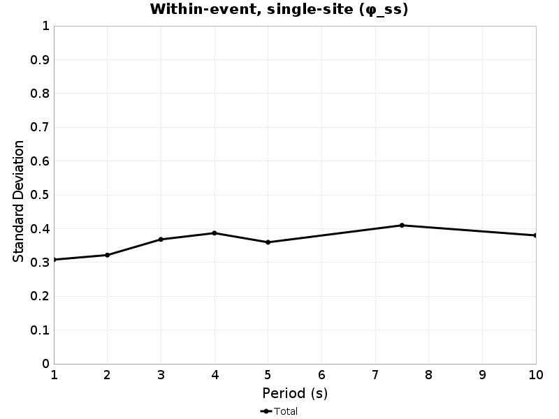
| 3s φSS | Total | Mean | Median | Range | 5s φSS | Total | Mean | Median | Range | 7.5s φSS | Total | Mean | Median | Range | 10s φSS | Total | Mean | Median | Range |
|---|
| 0.37 | 0.36 | 0.36 | [0.23 0.6] | | 0.36 | 0.35 | 0.35 | [0.18 0.55] | | 0.41 | 0.4 | 0.4 | [0.21 0.64] | | 0.38 | 0.37 | 0.36 | [0.22 0.61] |
120.0 km M7 Within-event, single-site Results
(top)

| 3s φSS | Total | Mean | Median | Range | 5s φSS | Total | Mean | Median | Range | 7.5s φSS | Total | Mean | Median | Range | 10s φSS | Total | Mean | Median | Range |
|---|
| 0.33 | 0.33 | 0.32 | [0.19 0.5] | | 0.38 | 0.37 | 0.36 | [0.16 0.55] | | 0.42 | 0.4 | 0.4 | [0.2 0.66] | | 0.4 | 0.39 | 0.37 | [0.21 0.67] |
| 3s | 5s |
|---|
| 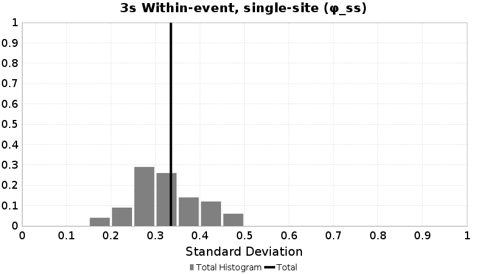 |  |
| 7.5s | 10s |
| 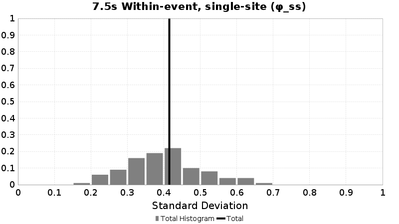 |  |
20.0 km M7.5 Within-event, single-site Results
(top)
| 3s φSS | Total | Mean | Median | Range | 5s φSS | Total | Mean | Median | Range | 7.5s φSS | Total | Mean | Median | Range | 10s φSS | Total | Mean | Median | Range |
|---|
| 0.37 | 0.36 | 0.36 | [0.24 0.48] | | 0.32 | 0.31 | 0.3 | [0.19 0.48] | | 0.35 | 0.34 | 0.32 | [0.19 0.62] | | 0.33 | 0.32 | 0.32 | [0.15 0.5] |
| 3s | 5s |
|---|
| |
| 7.5s | 10s |
|  |
60.0 km M7.5 Within-event, single-site Results
(top)
| 3s φSS | Total | Mean | Median | Range | 5s φSS | Total | Mean | Median | Range | 7.5s φSS | Total | Mean | Median | Range | 10s φSS | Total | Mean | Median | Range |
|---|
| 0.35 | 0.35 | 0.35 | [0.23 0.48] | | 0.35 | 0.34 | 0.34 | [0.2 0.54] | | 0.35 | 0.34 | 0.34 | [0.13 0.56] | | 0.32 | 0.31 | 0.3 | [0.16 0.47] |
120.0 km M7.5 Within-event, single-site Results
(top)
| 3s φSS | Total | Mean | Median | Range | 5s φSS | Total | Mean | Median | Range | 7.5s φSS | Total | Mean | Median | Range | 10s φSS | Total | Mean | Median | Range |
|---|
| 0.29 | 0.29 | 0.28 | [0.17 0.41] | | 0.33 | 0.33 | 0.32 | [0.18 0.51] | | 0.35 | 0.34 | 0.33 | [0.16 0.55] | | 0.32 | 0.32 | 0.31 | [0.17 0.49] |
Between-events Variability
(top)
Between-events Variability Methodology
(top)
Between-events variability, denoted τ in Al Atik (2010), is computed separately for each:
- Site [1 unique]
- Distance [10 unique]
We first compute the median natural-log ground motion, δBe, for each combination of:
That median, δBe, is computed across all 36 combinations of:
- Rupture Strike [36 unique]
- Path [1 unique]
We take τ to be the standard deviation of all δBe.
Here is an exmample with 5 rotations, which would be repeated for each combination of [Rupture]. The site is shown with a blue square, and initially oriented rupture in bold with its hypocenter as a red star and centroid a green circle. Rotations of that rupture are in gray:
Between-events Variability Mag-Distance Plots
(top)
| Plot Type | 3s | 5s | 7.5s | 10s |
|---|
| Simulated |  |  |  | |
| GMPE | | |  | |
| Simulated - GMPE |  |  |  | |
| Sim Median SA |  | |  |  |
20.0 km M6.5 Between-events Results
(top)

| 3s τ | Mean δBe | δBe Range | 5s τ | Mean δBe | δBe Range | 7.5s τ | Mean δBe | δBe Range | 10s τ | Mean δBe | δBe Range |
|---|
| 0.31 | -4.39 | [-5 -3.39] | 0.3 | -5.1 | [-5.69 -4.41] | 0.3 | -5.83 | [-6.67 -5.16] | 0.27 | -6.52 | [-7.32 -5.9] |
60.0 km M6.5 Between-events Results
(top)

| 3s τ | Mean δBe | δBe Range | 5s τ | Mean δBe | δBe Range | 7.5s τ | Mean δBe | δBe Range | 10s τ | Mean δBe | δBe Range |
|---|
| 0.4 | -5.36 | [-6.14 -4.4] | 0.3 | -5.92 | [-6.69 -5.19] | 0.32 | -6.63 | [-7.49 -6] | 0.26 | -7.26 | [-7.96 -6.57] |
120.0 km M6.5 Between-events Results
(top)

| 3s τ | Mean δBe | δBe Range | 5s τ | Mean δBe | δBe Range | 7.5s τ | Mean δBe | δBe Range | 10s τ | Mean δBe | δBe Range |
|---|
| 0.25 | -5.88 | [-6.32 -5.11] | 0.34 | -6.44 | [-7.16 -5.64] | 0.31 | -7.07 | [-8.11 -6.3] | 0.29 | -7.66 | [-8.43 -6.85] |
20.0 km M7 Between-events Results
(top)

| 3s τ | Mean δBe | δBe Range | 5s τ | Mean δBe | δBe Range | 7.5s τ | Mean δBe | δBe Range | 10s τ | Mean δBe | δBe Range |
|---|
| 0.24 | -3.7 | [-4.38 -3.23] | 0.25 | -4.52 | [-5.26 -3.81] | 0.25 | -5.07 | [-5.75 -4.56] | 0.28 | -5.59 | [-6.36 -4.95] |
60.0 km M7 Between-events Results
(top)

| 3s τ | Mean δBe | δBe Range | 5s τ | Mean δBe | δBe Range | 7.5s τ | Mean δBe | δBe Range | 10s τ | Mean δBe | δBe Range |
|---|
| 0.28 | -4.58 | [-5.29 -4.03] | 0.28 | -5.21 | [-5.96 -4.6] | 0.24 | -5.79 | [-6.45 -5.29] | 0.25 | -6.34 | [-7.05 -5.8] |
120.0 km M7 Between-events Results
(top)
| 3s τ | Mean δBe | δBe Range | 5s τ | Mean δBe | δBe Range | 7.5s τ | Mean δBe | δBe Range | 10s τ | Mean δBe | δBe Range |
|---|
| 0.16 | -5.01 | [-5.5 -4.66] | 0.28 | -5.74 | [-6.49 -5.04] | 0.24 | -6.22 | [-6.9 -5.68] | 0.28 | -6.72 | [-7.42 -5.98] |
20.0 km M7.5 Between-events Results
(top)
| 3s τ | Mean δBe | δBe Range | 5s τ | Mean δBe | δBe Range | 7.5s τ | Mean δBe | δBe Range | 10s τ | Mean δBe | δBe Range |
|---|
| 0.12 | -2.92 | [-3.29 -2.63] | 0.12 | -3.72 | [-4.01 -3.45] | 0.18 | -4.34 | [-4.76 -3.93] | 0.22 | -4.87 | [-5.34 -4.19] |
60.0 km M7.5 Between-events Results
(top)

| 3s τ | Mean δBe | δBe Range | 5s τ | Mean δBe | δBe Range | 7.5s τ | Mean δBe | δBe Range | 10s τ | Mean δBe | δBe Range |
|---|
| 0.12 | -3.68 | [-4.09 -3.39] | 0.12 | -4.32 | [-4.64 -4.05] | 0.19 | -4.89 | [-5.34 -4.39] | 0.2 | -5.55 | [-6.06 -5.04] |
120.0 km M7.5 Between-events Results
(top)

| 3s τ | Mean δBe | δBe Range | 5s τ | Mean δBe | δBe Range | 7.5s τ | Mean δBe | δBe Range | 10s τ | Mean δBe | δBe Range |
|---|
| 0.09 | -4.06 | [-4.33 -3.84] | 0.12 | -4.86 | [-5.14 -4.55] | 0.17 | -5.38 | [-5.79 -4.94] | 0.2 | -5.92 | [-6.42 -5.34] |
Azumth Dependence
(top)
Rupture Strike Dependence
(top)
| Mag | Type | 3s | 5s | 7.5s | 10s |
|---|
| M6.5 | τ | | | | |
| M6.5 | τ |  |  | |  |
| M7 | τ | | | | |
| M7 | τ |  | |  |  |
| M7.5 | τ | | | | |
| M7.5 | τ |  | |  | |
| M6.5 | Median SA | | | | |
| M6.5 | Median SA | |  | |  |
| M7 | Median SA | | | | |
| M7 | Median SA | |  |  |  |
| M7.5 | Median SA | | | | |
| M7.5 | Median SA |  | |  |  |
BBP PartB Comparison
(top)
Here we attempt to reproduce the SCEC BroadBand Platform "Part B" validation exercise as defined in:
Goulet, C. A., Abrahamson, N. A., Somerville, P. G., & Wooddell, K. E. (2014). The SCEC broadband platform validation exercise: Methodology for code validation in the context of seismic‐hazard analyses. Seismological Research Letters, 86(1), 17-26. (link)
The BBP exercise positioned sites in a 'racetrack' around the ruptures. Here, we instead position and rotate the ruptures around the site in order to work in 3-D with CyberShake reciprical calculations. Results for official scenarios and distances are in bold, results for additional magnitudes or distances not defined in the Goulet et. al. (2014) are italicised.
BBP PartB Summary Table
(top)
| Scenario | 20.0 km | 40.0 km | 60.0 km | 80.0 km | 100.0 km | 120.0 km | 140.0 km | 160.0 km | 180.0 km | 200.0 km |
|---|
| M6.6 Reverse | PASS | (PASS) | (PASS) | (PASS) | (PASS) | (PASS) | (PASS) | (PASS) | (PASS) | (PASS) |
| M7.2 Reverse | (FAIL) | (FAIL) | (FAIL) | (FAIL) | (FAIL) | (FAIL) | (FAIL) | (FAIL) | (FAIL) | (FAIL) |
BBP PartB, M6.6, Reverse, Dip=45, Ztor=3
(top)
| 20.0 km | 40.0 km | 60.0 km | 80.0 km | 100.0 km | 120.0 km | 140.0 km | 160.0 km | 180.0 km | 200.0 km |
|---|
| | | | | |  | | | |
BBP PartB, M7.2, Reverse, Dip=45
(top)
| 20.0 km | 40.0 km | 60.0 km | 80.0 km | 100.0 km | 120.0 km | 140.0 km | 160.0 km | 180.0 km | 200.0 km |
|---|
| | |  | | | | | | |
CSV Files
(top)